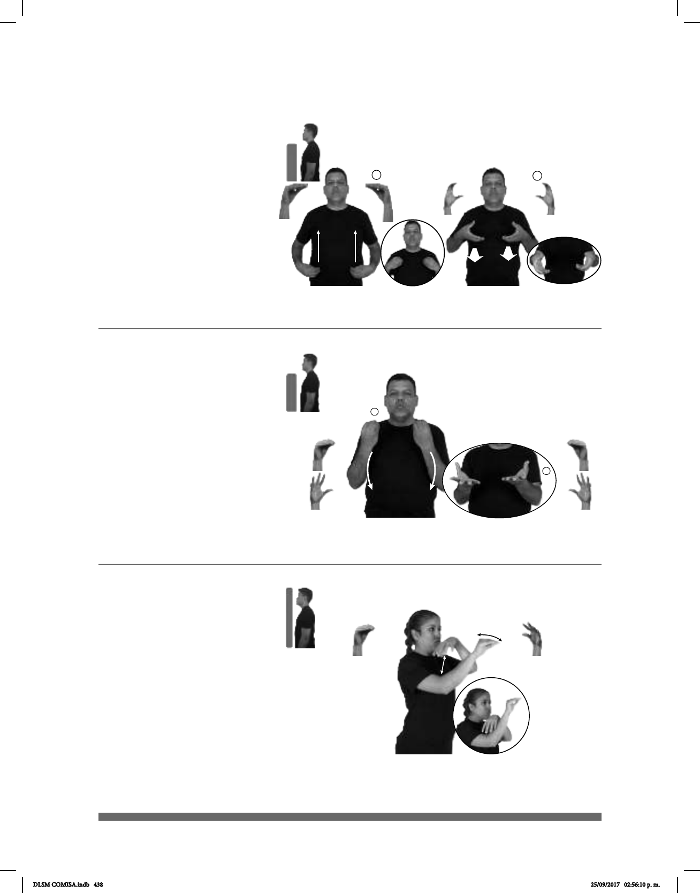

438
(O-31)
Seña: SC: I. y II. SS
I. O.9; II C.1
I. Palmas hacia adentro;
II. Palmas oblicuas hacia el centro y
hacia arriba.
I. Las manos inician sobre
la cintura y terminan sobre el pecho; II.
A la altura del pecho.
Movimiento: I. Las manos simulan un
salto; II. Recto hacia el frente.
sust. f. Localización de una
conjunto de las indicaciones que la
señalan.
pos-MI PAPÁ TENER DOS DIRECCIÓN LUGAR
Mi papá tiene dos direcciones.
Donar (O-32)
Seña: SS
Seña que pasa de O.5 a 5.2
: Las palmas inician hacia
adentro y terminan hacia arriba.
De los hombros al pecho.
Movimiento: Las manos se mueven
formando un arco mientras los dedos se
extienden.
Se emite un click.
Simula la acción de
brindar algo a alguien.
v. tr. Ceder o dar alguien algo
que le pertenece como ayuda o contribución.
SIEMPRE pos-MI FAMILIA TELETÓN DONAR++
Mi familia siempre dona a Teletón.
Dromedario (O-33)
Seña: SB
MD O.5, MB 5.4
MD palma hacia afuera.
MB palma hacia abajo.
A la altura de la barbilla.
MD delante de MB.
Movimiento: La MD se mueve de atrás
muñeca, la MB simula un salto.
sust. m. Mamífero
rumiante de cabeza pequeña y alargada
y cuello largo. Es alto, corpulento, con
una giba o joroba en el lomo formada
por acumulación de grasa. Vive en los
desiertos de Asia y África donde se
utiliza como cabalgadura y para carga.
pro-ELLOS DROMEDARIO AGUA POCA LAMER
Los dromedarios consumen poca agua.
DLSM COMISA.indb 438 25/09/2017 02:56:10 p. m.